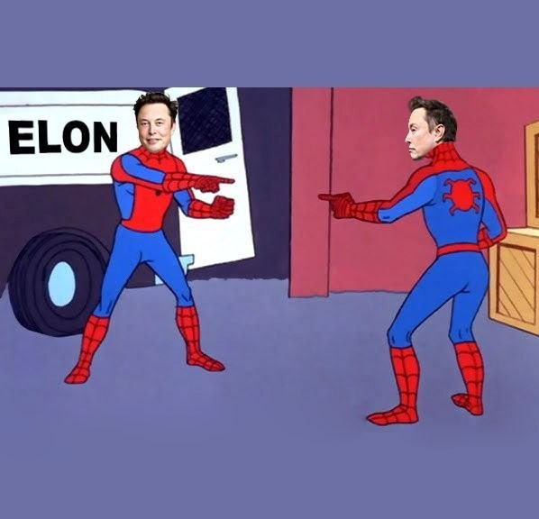
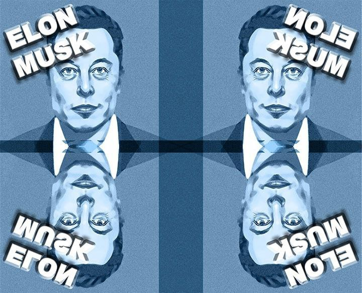
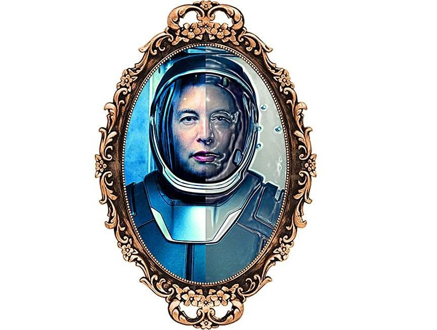
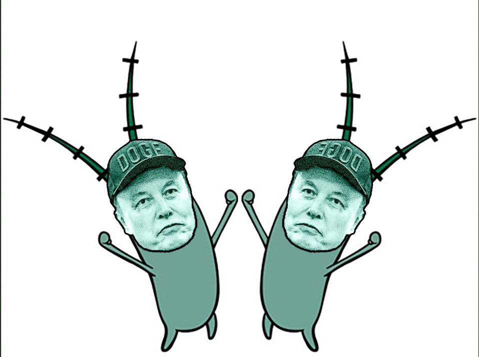

In the chaotic multiverse of crypto, MuskMirror Token ($MUSKM) embodies the "imposter" genius. Two identical Elons, one choice.
A network devoted to The Real Elon Musk. Join the inner circle to discuss AI, Rocketry, Mars Exploration, and Engineering.


Elon Musk is applauded again, again, again. So stupendous, living in this Matrix.
100% Locked Liquidity
0% Tax Environment
Ownership Renounced

"Ten cents to a dollar now, for a shelf of pregnant hens."